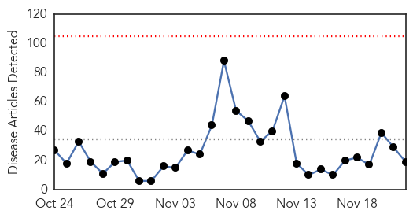
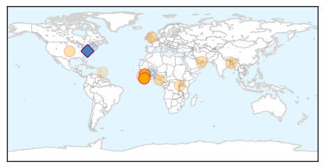
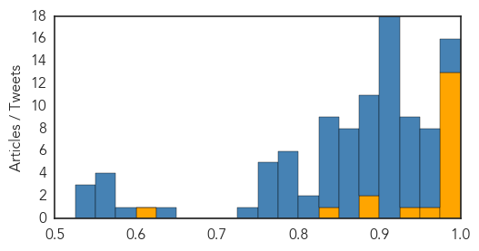
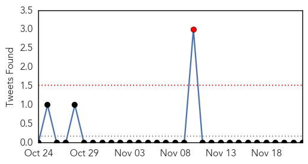
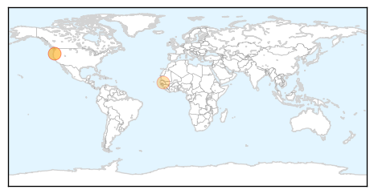

Ebola
30-Day Web Trend
0 alerts, 0 warnings

30-Day Twitter Trend
7 alerts, 17 warnings

Article Locations
Article Confidences
Top Articles:
- 1.000
- Last known Ebola patient in West Africa recovers
- 1.000
- Three new confirmed cases in previously Ebola-free Liberia
- 1.000
- Three new cases of Ebola appear in Liberia
- 0.999
- Liberia monitors over 150 Ebola contacts as virus re-emerges
- 0.999
- New Ebola outbreak in Liberia, over 150 Ebola contacts monitored
- 0.999
- Liberia on alert as three new Ebola cases are confirmed
- 0.999
- Ebola returns to Liberia with three new cases
- 0.999
- Liberia to place 153 people under surveillance since new Ebola outbreak
- 0.999
- Three new ebola cases detected in Liberia
- 0.998
- Liberians frighten As Three New Ebola Cases resurfaced
- 0.996
- Three new ebola cases detected in Liberia
- 0.985
- barfblog
- 0.985
- Language and disease control: A partnership made with my partner
- 0.956
- New case of Ebola found in Liberia; WHO probing
- 0.935
- How TOTAL added arsenal to the fight against Ebola in Rivers
- 0.898
- Global Health Conference in Charleston
- 0.887
- Week in health - The New Times
- 0.846
- Chief Medical Officer expresses MOHS readiness to improve status of emergency obstetric and newborn care in Sierra Leone - Sierra Leone
- 0.624
- Freaked out pharmacist falsely reported woman had Ebola: suit
Top Tweets:
- 0.984
- New Ebola outbreak in Liberia over 150 Ebola contacts monitored - https://t.co/sOuWpKe5oK ebola
- 0.983
- Liberian health officials move to control Ebola outbreak in Monrovia - https://t.co/1RnCqUxDyi ebola
- 0.979
- BREAKING 3 NEW EBOLA CASES REPORTED TODAY! ebola BreakingNews Hannity
- 0.964
- New Ebola outbreak confirmed in Liberia - https://t.co/4IdvjyuIA2 ebola
- 0.960
- Three New Ebola Cases In Liberia After West African Nation Declared Ebola Free - KTRS | St Louis ... https://t.co/cyT2UZO4Rd ebola EVD
- 0.959
- Liberia Faces another Outbreak of Ebola - https://t.co/k61zSmTJoZ ebola
- 0.954
- Setback for Liberia as 3 Ebola cases confirmed - https://t.co/qzZRFl8lXj ebola
- 0.954
- Liberia confirms Fresh Cases of Ebola. - https://t.co/jjxqAGGxyz ebola
- 0.952
- BREAKING EBOLA!!!!! 3 NEW EBOLA CASES REPORTED TODAY!!!!!!! https://t.co/snnsEct17a ebola BREAKING
- 0.952
- BREAKING EBOLA!!!!! 3 NEW EBOLA CASES REPORTED TODAY!!!!!!! https://t.co/snnsEct17a ebola BREAKING
- 0.949
- Ebola crisis 'claimed needless lives' because World Health Organisation failed ... - Telegraph https://t.co/OUlft7p62t ebola EVD
- 0.942
- New Ebola cases reported in Liberia - https://t.co/B8qn8r7YXI ebola
- 0.941
- Ebola case confirmed in Liberia - https://t.co/zHaqfAiGmE ebola
- 0.941
- Ebola case confirmed in Liberia - https://t.co/iDQBKKQDEO ebola
- 0.936
- Liberia monitors new Ebola outbreak - https://t.co/Js9PJznbBG ebola
- 0.931
- Ebola virus chemical products stolen from Paris hospital as city is gripped by water poison fear - https://t.co/sQUDQMj1sL ebola
- 0.931
- Ebola virus chemical products stolen from Paris hospital as city is gripped by water poison fear - https://t.co/VwgFcS1CkG ebola
- 0.926
- Medical officials in Liberia monitor 153 people after Ebola re-emerges - https://t.co/2q1PlvnGTr ebola
- 0.924
- Sierra Leone: Dr. Wright on Ebola's aftermath - https://t.co/STvKBDZ17Y ebola
- 0.920
- Liberia monitors over 150 Ebola contacts as virus re-emerges - Reuters https://t.co/q8CC8kZOK3 ebola EVD
- 0.920
- Liberia monitors over 150 Ebola contacts as virus re-emerges - Reuters https://t.co/1n03Ns8VPB ebola EVD
- 0.916
- Medical officials in Liberia monitor 153 people after Ebola re-emerges - USA TODAY https://t.co/3d4rzlHt8f ebola EVD
- 0.915
- BREAKING EBOLA NEW CONFIRMED CASES TODAY! 3 NEW EBOLA CASES TODAY!!!!!!! https://t.co/snnsEct17a @cnnbrk
- 0.915
- BREAKING EBOLA NEW CONFIRMED CASES TODAY! 3 NEW EBOLA CASES TODAY!!!!!!! https://t.co/snnsEct17a
- 0.915
- BREAKING EBOLA NEW CONFIRMED CASES TODAY! 3 NEW EBOLA CASES TODAY!!!!!!! https://t.co/snnsEct17a …
- 0.915
- BREAKING EBOLA NEW CONFIRMED CASES TODAY! 3 NEW EBOLA CASES TODAY!!!!!!! https://t.co/snnsEct17a …
- 0.914
- Liberia Confirms Three New Cases of Ebola - https://t.co/wQCMdaE5Mu ebola
- 0.914
- Liberia Confirms Three New Cases of Ebola - https://t.co/rqMls81b5G ebola
- 0.914
- Liberia Confirms Three New Cases of Ebola - https://t.co/cDCXvMzcL7 ebola
- 0.911
- Liberia monitors over 150 Ebola contacts as virus re-emerges - https://t.co/lMDp9vww1E ebola
- 0.911
- Liberia monitors over 150 Ebola contacts as virus re-emerges - https://t.co/T1Y10hqzcx ebola
- 0.911
- Liberia monitors over 150 Ebola contacts as virus re-emerges - https://t.co/0ChzvjyYXf ebola
- 0.905
- Liberia: Yet again three new cases of Ebola - https://t.co/AiJaWGLbIJ ebola
- 0.903
- Liberia monitors new Ebola outbreak - The Week Magazine https://t.co/29N0S2w1uM ebola EVD
- 0.903
- Liberia is trying to control a new Ebola outbreak - https://t.co/2rSwxh7hW5 ebola
- 0.902
- Three new confirmed cases in previously Ebola-free Liberia - i24news https://t.co/SBe75rz2gY ebola EVD
- 0.892
- Ebola re-emerges in Liberia: three new cases announced - https://t.co/TkbIFaAPJa ebola
- 0.892
- Ebola re-emerges in Liberia: three new cases announced - https://t.co/3FaICIR0Dd ebola
- 0.892
- BREAKING EBOLA 3 PEOPLE TEST POSTIVE WITH EBOLA!!!! 40 more being monitored! https://t.co/snnsEct17a
- 0.892
- BREAKING EBOLA 3 PEOPLE TEST POSTIVE WITH EBOLA!!!! 40 more being monitored! https://t.co/snnsEct17a
- 0.891
- Three new ebola cases detected in Liberia - https://t.co/n9sIHgSyWp ebola
- 0.891
- Three new ebola cases detected in Liberia - https://t.co/i1jHh5cBXQ ebola
- 0.891
- Three new ebola cases detected in Liberia - https://t.co/P86xCsjQM0 ebola
- 0.888
- Ebola crisis 'claimed needless lives' because World Health Organisation failed to act quickly - https://t.co/ZTZrPUDog2 ebola
- 0.878
- Ebola: The People ' N 8B - https://t.co/hyvp2hjI88 ebola
- 0.873
- Ebola returns to Liberia months after nation declared free of virus - CNN https://t.co/9QkeHyrUWa ebola EVD
- 0.871
- Ebola virus chemical products stolen from Paris hospital as city is gripped ... - Citizens for Le... https://t.co/BLK0eT2peA ebola EVD
- 0.869
- Ebola re-emerges in Liberia - https://t.co/nz40Mqzjac ebola
- 0.869
- Ebola re-emerges in Liberia - https://t.co/8xkgdbJpbj ebola
- 0.859
- Three new Ebola cases reported - https://t.co/gHkM29ZzmA ebola
Showing top 50 tweets...
Meningitis
30-Day Web Trend
3 alerts, 0 warnings

30-Day Twitter Trend
1 alerts, 0 warnings

Article Locations
Article Confidences

Top Articles:
Top Tweets:
-
No tweets found for Nov 22, 2015